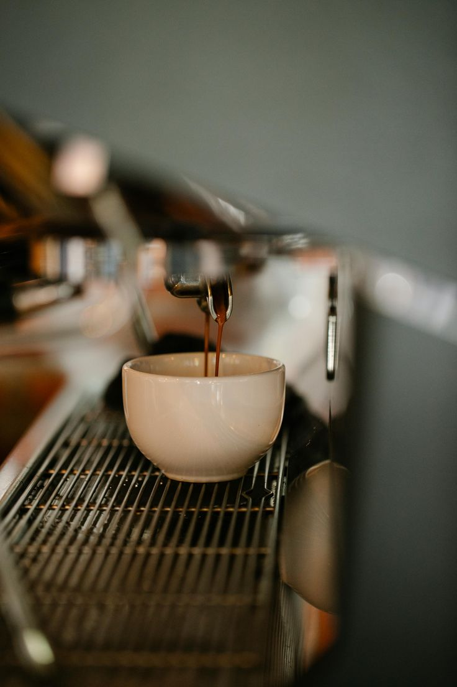

Menu こーひー
What we pour.
Mostly classics, made carefully. A handful of Japanese specials. Everything brewed to order, so give it a minute.

Coffee
コーヒーOur house espresso is a seasonal blend, roasted for sweetness. Milk drinks are made with whole milk; oat milk is available for every one of them.
-
Drip Coffee MVR40
Batch-brewed filter, changed through the day.
-
Pour-over MVR55
Single origin, brewed by hand. Ask what's on the bar.
-
Americano MVR45
-
Cortado MVR50
-
Flat White MVR60
-
Cappuccino MVR60
-
Latte MVR60
-
Mocha MVR70
Espresso, dark chocolate, steamed milk. Not too sweet.
Tea
お茶Loose leaf, steeped properly. Served in a pot for one.
-
Sencha MVR45
Bright, grassy Japanese green tea.
-
Hōjicha MVR45
Roasted green tea. Toasty, low in caffeine, good in the evening.
-
Chamomile MVR40
Pastries
焼き菓子Baked each morning in small batches. When they're gone, they're gone.
-
Butter Croissant MVR40
-
Banana Bread MVR45
Toasted, with a little salted butter.
-
Almond Financier MVR35
-
Cinnamon Bun MVR45
Japanese Specials
特別な一杯A short list, kept short on purpose.
-
Matcha Latte MVR70
Ceremonial-grade matcha whisked to order, folded into steamed milk. Hot or iced.
-
Hōjicha Latte MVR65
Roasted green tea and milk. Warm, nutty, a little like toast.
-
Yuzu Espresso Tonic MVR75
A double shot over tonic and ice, with a twist of yuzu. Bright and bitter in the best way.
Drinks are made to order, and they take the time they take.
Find us in Hulhumalé, every day from morning until evening.